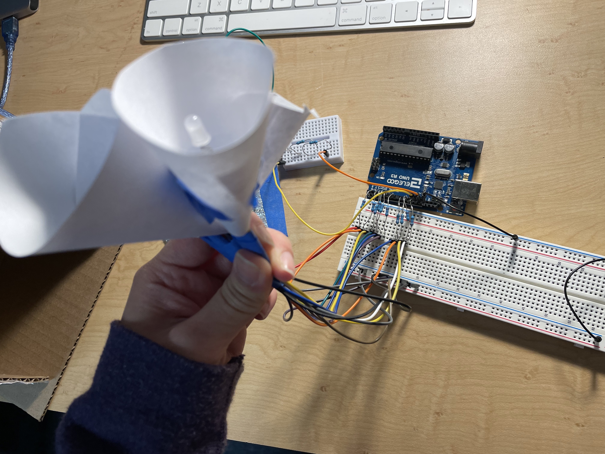
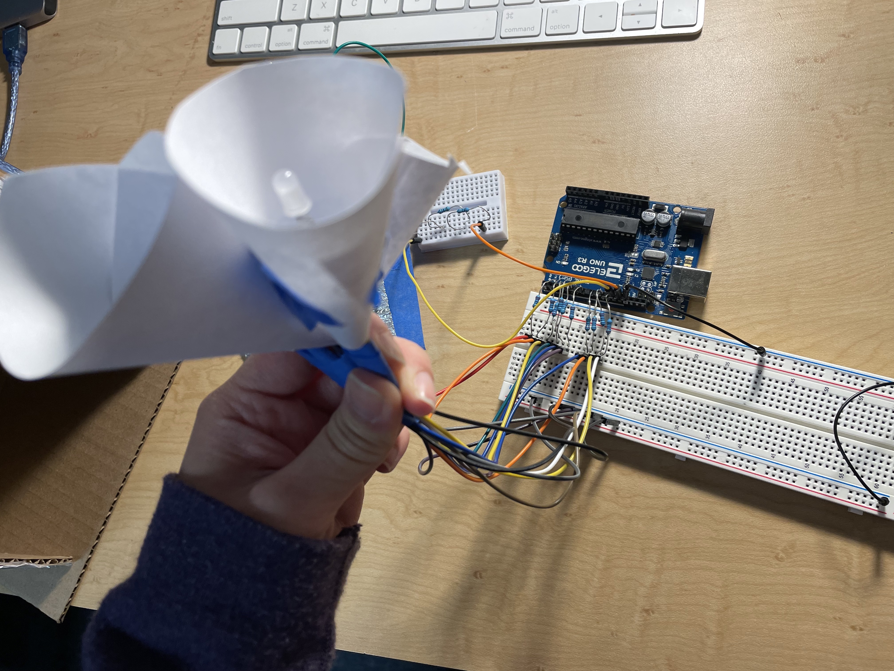
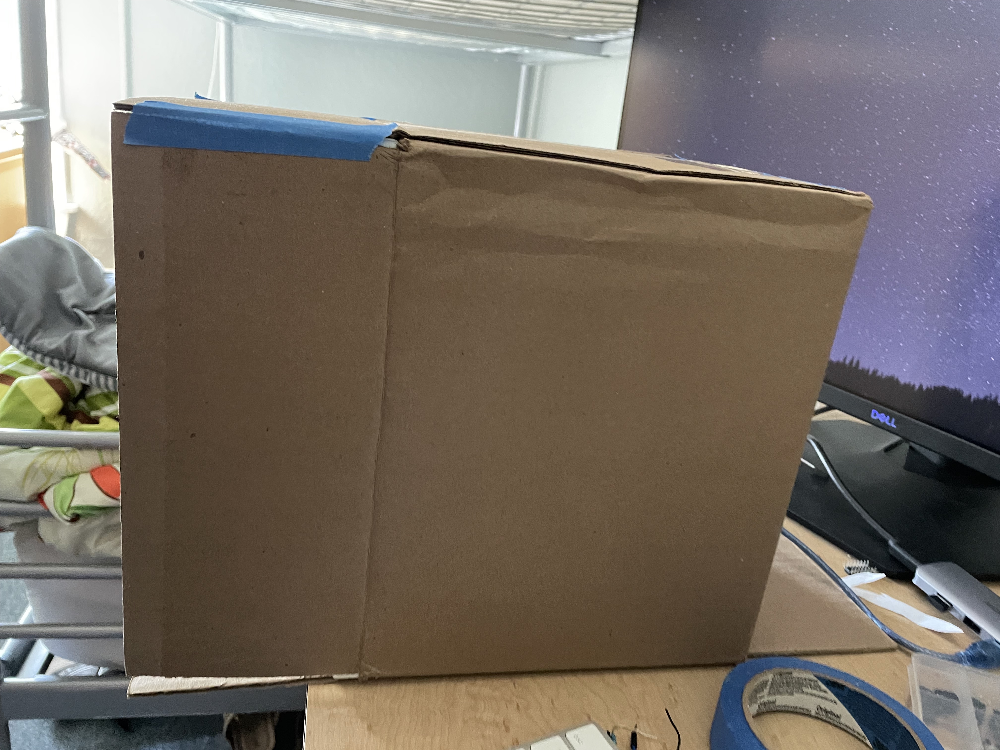

Michelle's Final Project!
Okay, I had a really hard time trying to decide what to do for my final project. After hours of scouring the internet for ideas, I ended up being inspired by interactive touch art pieces.
Basically, I wanted to paint a picture on a canvas, with LEDs behind it that would be activated by a capacitive sensor.
For this project, I used a canvas, paint, RGB LEDs, Yellow LEDs, a whole bunch of wires, foil for the capacitive sensor, and my arduino. And tape. And paper, and a cardboard box.
The circuit of this project was actually very simple, with 2 RGB LEDs, 4 Yellow LEDs, and a capacitive sensor. Here's the schematic and circuit below!

 

I used 6 220 ohm resistors for the RGB LEDs based on the calculations above, and 4 220 ohm resistors for the yellow LED.
Figuring out and callibrating for the capacitive touch was actually pretty difficult. I used this reference to determine how much resistance to use, but even so, it was difficult to figure out capacitive touch
with all of the variables in mind: size of the foil, amount of resistors, the weight of the canvas, etc. After much callibration and testing, I decided to use 3 1 Megaohm resistors, and this resulted in me receiving ranges from my
capacitive sensing that I was happy with.
To callibrate, I used arduino's serial monitor and serial plotter to see what values I was receiving when my hand was about 2 inches away, when it was not close at all, and when it was touching. From this, I decided that I wanted to
constrain my values between 50 and 1000, because that would be where most of the sensing would happen at a short distance. At touch, I was receiving around 8000, but I didn't think I should include that value because it was non-linearly much higher than
my other values. From this, I mapped out ranges from 50 and 500 to become between 0 and 255 to correlate with RGB LED values. This way, the RGB LEDs would turn a different color as someone's hand got closer to the foil.
The arduino code is below:
#include
// 3 megohm resistor between pins 13 & 12, pin 12 is sensor pin
CapacitiveSensor cs_13_12 = CapacitiveSensor(13,12);
// pins for the 2 RGB lights and the 4 yellow LED lights
const int R1 = 2;
const int G1 = 3;
const int B = 4;
const int R2 = 5;
const int G2 = 6;
const int B2 = 7;
const int Y1 = 8;
const int Y2 = 9;
const int Y3 = 10;
const int Y4 = 11;
void setup() {
// turn off autocalibrate on channel 1
cs_13_12.set_CS_AutocaL_Millis(0xFFFFFFFF);
//
Serial.begin(9600);
pinMode(R1, OUTPUT);
pinMode(G1, OUTPUT);
pinMode(B, OUTPUT);
pinMode(R2, OUTPUT);
pinMode(G2, OUTPUT);
pinMode(B2, OUTPUT);
pinMode(Y1, OUTPUT);
pinMode(Y2, OUTPUT);
pinMode(Y3, OUTPUT);
pinMode(Y4, OUTPUT);
}
void loop() {
long start = millis();
// store capacitive sensor values
long sensor = cs_13_12.capacitiveSensor(30);
// tab character for debug window spacing
Serial.print("\t");
// arbitrary delay to limit data to serial port
delay(10);
// constrain the values from the sensor between 50 and 1000
int values = constrain(sensor, 50, 1000);
// map the values of between 50 and 500 to 0 and 255
int brightness = map(values, 50, 500, 0, 255);
Serial.println(values);
// if the values are bigger or equals to 70, turn both RGB LEDs on, with Reds at 255, Greens at 50,
// and Blues correlated to capacitive sensor proximity
// yellow LEDs turn on high with values bigger or equals to 70
if (values >= 70) {
analogWrite(R1, 255);
analogWrite(G1, 50);
analogWrite(B, brightness);
analogWrite(R2, 255);
analogWrite(G2, 50);
analogWrite(B2, brightness);
digitalWrite(Y1, HIGH);
digitalWrite(Y2, HIGH);
digitalWrite(Y3, HIGH);
digitalWrite(Y4 , HIGH);
}
After figuring all of the technical side, I also had to make my art piece, make sure the LEDs fit nicely on the canvas, and make the enclosure a little nicer!
Thankfully, I had a box that fit my canvas perfectly (thank God I'm a hoarder of boxes....), and this box also hid all of my wires nicely! I put the foil onto the canvas with tape, and also used paper to make little circles around my LEDs to make their light spread further. After playing around with their placement and taping them in certain ways, this is what the final product looks like!


As you can see from this video, the LEDs will turn on when you get close to it, like 1 inch away. Then, touching it straight and holding will make it turn purple! My idea behind this picture in particular was that it would replicate a sunset with its colors.. Although I'm not sure how much that translated, haha. All in all, I had fun working on this project and hope to improve it!